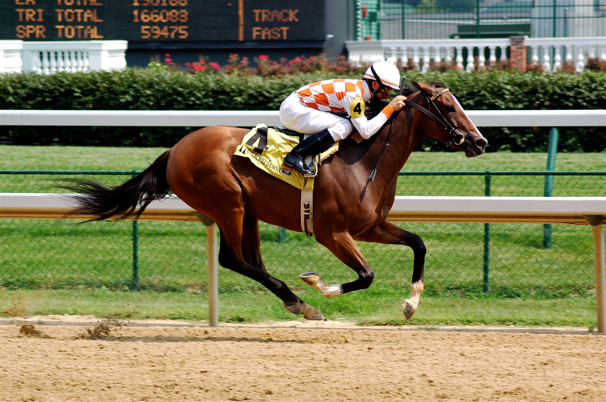
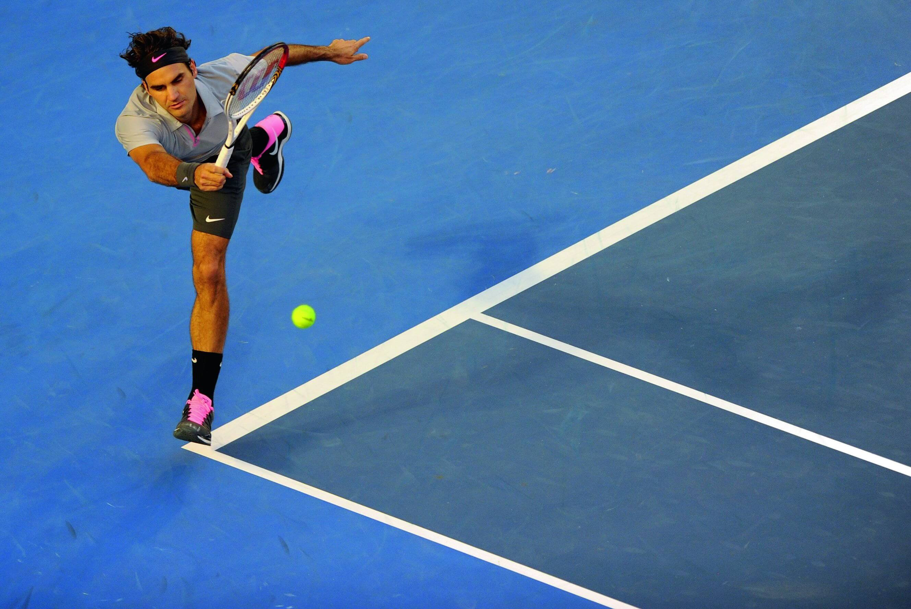

Schwimmsport ist die Ausübung des Schwimmens als sportliche Disziplin. In seiner Grundform wird der Schwimmsport als Wettkampf mehrerer Teilnehmer um die Bewältigung einer vorgegebenen Schwimmstrecke in kürzestmöglicher Zeit ausgetragen, oder auch ohne Zeitdruck zur Verbesserung der eigenen Schwimmtechnik.Durch verschiedene Übungen erlernt man seine Wasserlage, seine Arm- oder Beinbewegungen, bzw. allgemeine Koordination des Körpers, die Körperspannung und das richtige Atmen (gerade im Leistungssport). Wichtig dabei sind das Einhalten von Pausen zwischen den einzelnen Übungen und deren Wiederholungen.

Beschreibung: Landhockey ist ein Mannschaftssport, bei dem zwei Teams versuchen, einen circa 7 bis 8 Zentimeter grossen Kunststoffball in das gegnerische Tor zu schiessen. Dabei darf der Ball nur mit dem Hockeyschläger und nicht mit dem Körper berührt werden. Eine Ausnahme bildet der Torwart. Er darf den Ball mit dem Körper abwehren. Das Spielfeld besteht aus zwei Toren mit je einem halbrunden Schusskreis, aus welchem auf das Tor geschossen werden darf, einer Spielfeldbegrenzung und der Mittellinie.

Basketball ist eine Ballsportart bei welcher das Ziel des Spieles ist, den Ball in den Korb zu werfen, der in einer Höhe von 3,05 Meter an den Schmalseiten des Spielfeldes angebracht ist. Jede Mannschaft versucht so viele Bälle wie möglich in den Spielkorb auf der gegenüberliegenden Seite des Spielfeldes zu werfen. Jeder Treffer des Balles in den Korb zählt dabei abhängig von der Entfernung aus der der Spieler geworfen hat, zwei oder drei Punkte.

Reiten bezeichnet die Fortbewegung des Menschen auf dem Rücken eines Tieres. Dabei kann es sich um Pferde, aber auch um andere Reittiere wie Esel oder Kamele handeln. Der Reiter kann auf verschiedene Weisen auf das Reittier einwirken. Die Einwirkungen werden Hilfen genannt. Zu diesen zählen Gewichtsverlagerung, Schenkeldruck, Zügel oder Leinen und die Stimme. Auch Hilfsmittel wie Gerten und Sporen dienen der Einwirkung. Dabei ist das Zusammenspiel der Hilfen für die Kommunikation mit dem Tier entscheidend, eine isolierte Hilfe ist wenig wirkungsvoll. Gut ausgebildete, feinfühlige Tiere reagieren auf minimale, von außen kaum wahrnehmbare Hilfen. So erkannte der „Kluge Hans“, ein „rechnendes“ Pferd, anhand von Spannung und Erleichterung des Fragenstellers, wie oft er mit dem Huf klopfen sollte.

Tennis ist ein Rückschlagspiel, das von zwei oder vier Spielern gespielt wird. Spielt ein Spieler gegen einen anderen, so wird dies Einzel genannt, spielen je zwei Spieler gegeneinander, wird dies Doppel genannt. Dieser früher in Deutschland als elitär geltende Sport hat heute auch als Breitensport eine herausragende Bedeutung erlangt. Seit 1988 ist Tennis wieder Bestandteil der Olympischen Sommerspiele.